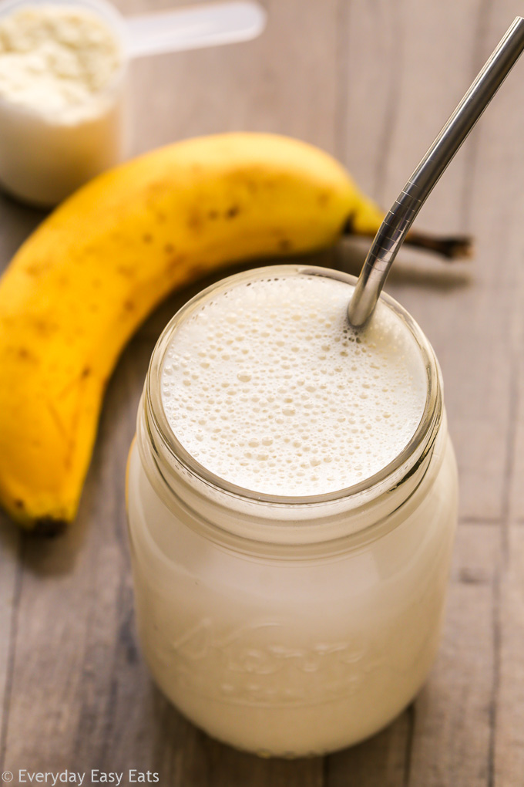

Banana Protein Shake

A 1000 calorie banana and vanilla flavoured protein shake.
This protein shake is simple and healthy, providing enough energy and protein for a fulfiling breakfast.
Ingredients
- 500 ml milk
- 1 scoop protein powder
- 3 tablespoons peanut butter
- 1 banana
Steps
- Add milk to blender
- Add protein powder
- Add peanut butter
- Add bananana
- Blend and serve